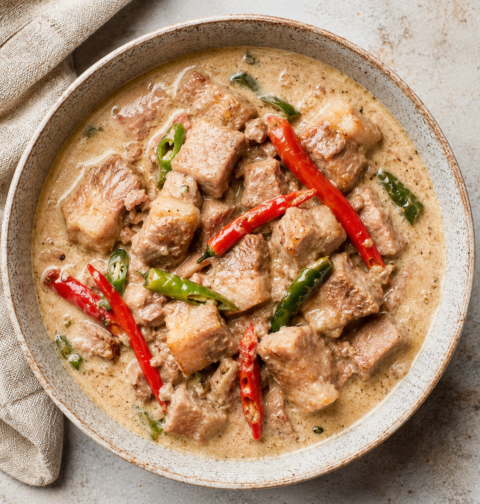

Borders
Try these popular dishes from our featured countries.


a deeply comforting savory stew featuring chicken, pork, or a combination of both, slow-cooked in vinegar, soy sauce, garlic, bay leaves.
View Recipe →
a fiery, deeply savory Filipino stew made of pork belly cooked in rich coconut milk and heavy amounts of chili peppers
View Recipe →
the ultimate summer dessert of the Philippines, celebrated for its vibrant colors, contrasting textures, and refreshing taste
View Recipe →